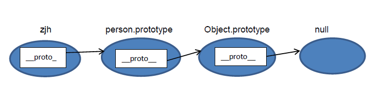

JS原型与原型链
一. 普通对象与函数对象
JavaScript 中，万物皆对象！但对象也是有区别的。分为普通对象和函数对象，Object ，Function 是JS自带的函数对象。下面举例说明:
function f1(){};
var f2 = function(){};
var f3 = new Function('str','console.log(str)');
var o3 = new f1();
var o1 = {};
var o2 =new Object();
console.log(typeof Object); //function
console.log(typeof Function); //function
console.log(typeof o1); //object
console.log(typeof o2); //object
console.log(typeof o3); //object
console.log(typeof f1); //function
console.log(typeof f2); //function
console.log(typeof f3); //function
在上面的例子中 o1 o2 o3 为普通对象，f1 f2 f3 为函数对象。怎么区分，其实很简单，凡是通过 new Function() 创建的对象都是函数对象，其他的都是普通对象。f1,f2,归根结底都是通过 new Function()的方式进行创建的。Function Object 也都是通过 New Function()创建的。
二. 原型对象
在JavaScript 中，每当定义一个对象（函数）时候，对象中都会包含一些预定义的属性。其中函数对象的一个属性就是原型对象 prototype。注：普通对象没有prototype,但有__proto__属性。
原型对象其实就是普通对象（Function.prototype除外,它是函数对象，但它很特殊，他没有prototype属性（前面说道函数对象都有prototype属性））。看下面的例子：
function f1(){};
console.log(f1.prototype) //f1{}
console.log(typeof f1. prototype) //Object
console.log(typeof Function.prototype) // Function，这个特殊
console.log(typeof Object.prototype) // Object
console.log(typeof Function.prototype.prototype) //undefined
从这句console.log(f1.prototype) //f1 {} 的输出就结果可以看出，f1.prototype就是f1的一个实例对象。就是在f1创建的时候,创建了一个它的实例对象并赋值给它的prototype，基本过程如下：
var temp = new f1();
f1. prototype = temp;
所以，Function.prototype为什么是函数对象就迎刃而解了，上文提到凡是new Function ()产生的对象都是函数对象，所以temp1是函数对象。
var temp1 = new Function (); Function.prototype = temp1;
那原型对象是用来做什么的呢？主要作用是用于继承。举了例子：
var person = function(name){
this.name = name
};
person.prototype.getName = function(){
return this.name;
}
var zjh = new person(‘zhangjiahao’);
zjh.getName(); //zhangjiahao
从这个例子可以看出，通过给person.prototype设置了一个函数对象的属性，那有person实例（例中：zjh）出来的普通对象就继承了这个属性。具体是怎么实现的继承，就要讲到下面的原型链了。
三．原型链
JS在创建对象（不论是普通对象还是函数对象）的时候，都有一个叫做__proto__的内置属性，用于指向创建它的函数对象的原型对象prototype。以上面的例子为例：
console.log(zjh.__proto__ === person.prototype) //true
同样，person.prototype对象也有__proto__属性，它指向创建它的函数对象（Object）的prototype
console.log(person.prototype.__proto__ === Object.prototype) //true
继续，Object.prototype对象也有__proto__属性，但它比较特殊，为null
console.log(Object.prototype.__proto__) //null
我们把这个有__proto__串起来的直到Object.prototype.__proto__为null的链叫做原型链。如下图：
